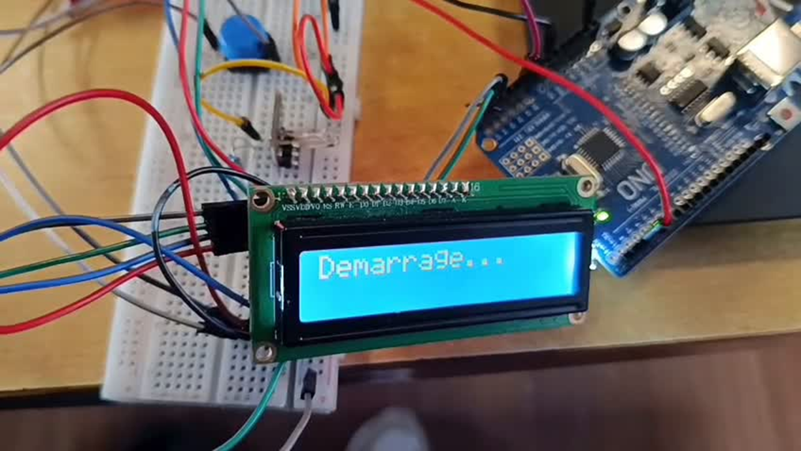
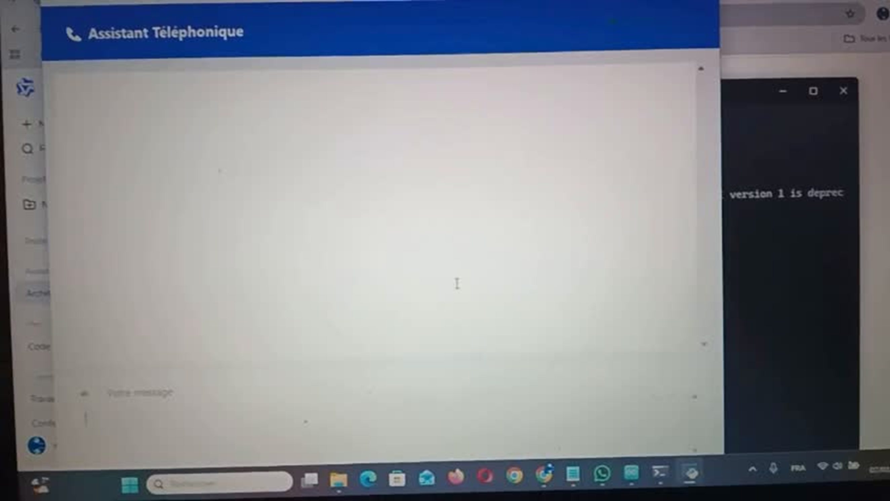

Inclusion project
Assistive Technology for Inclusion
An accessible communication solution that combines electronic hardware with AI assistance to support deaf and mute people.

About the project
Assistive Technology for Inclusion is an accessibility focused project designed to make everyday communication easier for deaf and mute people. It brings together an electronic system and an AI telephone assistant to provide clear, accessible communication support.
The electronic module uses an Arduino and LCD display to deliver visual information, while the AI assistant supports conversational interactions. Together, these two components demonstrate how embedded systems and artificial intelligence can create a more inclusive user experience.
Project objectives
- Design an accessible communication solution for deaf and mute people.
- Develop an electronic system that provides clear visual information in real time.
- Integrate an AI assistant to support more natural and accessible interactions.
- Combine hardware and software components in one inclusive solution.
- Demonstrate the value of technology for everyday accessibility and social inclusion.
Technologies used
System architecture
The system connects an ESP32 master, an Arduino slave and an LCD display to detect events and present clear messages. The IoT layer sends data to ThingSpeak for monitoring and visualisation. A Telegram chatbot delivers real-time alerts for events such as a visitor at the door or an emergency situation, directly on the user’s phone. The solution also includes a voice assistant that converts voice to text, reads written replies aloud and displays messages for deaf users.
Key features
- Visual feedback: messages and system information displayed on an LCD screen.
- Connected alerts: Telegram chatbot notifications for door, emergency and ambulance scenarios.
- IoT monitoring: sensor data sent to ThingSpeak for remote visualisation.
- Voice assistance: voice-to-text and text-to-speech support for accessible communication.
- Inclusive design: technology focused on practical support for deaf and mute users.
- Modular solution: hardware and AI components that can evolve independently.
Project presentation
Download the presentation to explore the project architecture, IoT network, alert scenarios and application demonstration in more detail.
Download the presentation
Part 1
Electronic system
The electronic module uses an Arduino, LCD display and connected components to provide clear, real-time information and notifications.

Part 2
AI assistance
A voice assistant and Telegram chatbot designed to facilitate communication, send alerts and make interactions more accessible.